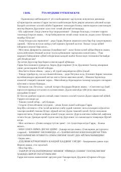

GPGarri Potter Xogvardstdagi ikkinchi yilida maxfiy hujra sirlarini ochishga kirishadi.
Garri Potter Xogvardsdagi ikkinchi o'quv yilida yangi sir-asrorlar va xavflarga duch keladi. Maktab devorlari ichida ochilgan maxfiy hujra va u yerdagi dahshatli qora kuchlar o'quvchilar hayotini xavf ostiga qo'yadi. Garri va uning do'stlari bu sirni ochish uchun yana bir bor jasorat ko'rsatishga majbur bo'lishadi.